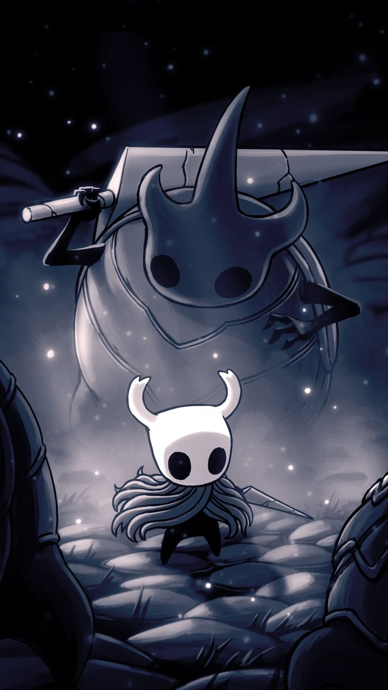

Hollow Knight
the last knight
Pure
Void
The Knight, a small, silent vessel of Void, explores Hallownest with a nail, seeking to defeat the Hollow Knight and end the Infection that plagues the kingdom.
The Knight, a small, silent vessel of Void, explores Hallownest with a nail.
The Knight explores Hallownest, wielding a nail, healing with soul, and mastering new skills. It dashes through danger, unlocks charms, and evolves its abilities to overcome the kingdom’s many trials.
Skill variety is vast across Hallownest. The Knight unlocks new abilities, healing with soul, dashing through enemies, and wielding upgraded nails. Some rare charms grant unique powers, evolving combat and traversal.
“A silent Knight’s steps echo, pulling minds into the forgotten depths, lost in Hallownest’s endless dream.”
The Knight is a survivor from the ancient past, a vessel of Void shaped long ago. Its ancestry is confirmed by ancient echoes and the legacy of forgotten kingdoms.
The Knight is a survivor from ancient times, a vessel of Void shaped long ago. Its ancestry is revealed by echoes, spells, and Hallownest’s lost legacy